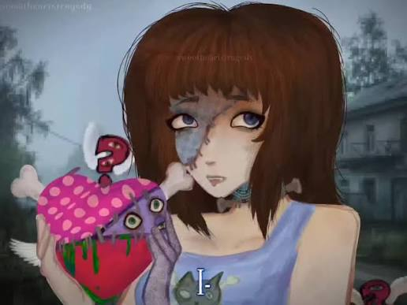
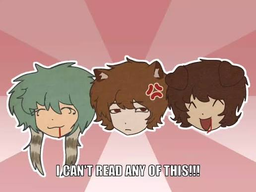

Fun Facts about Myself!
I've been able to play guitar since 2025. I learned almost over 50 songs. Most of these songs are rock, pop, and alternative. I learned guitar as it was an elective in my class and from that point I started to play guitar on the daily now.
I performed once on a stage in front of a massive crowd! This was my first time and I learned a lot from it so I partake from that experience and make sure what I did the first time doesn't happen again.
I like to walk a lot since I like to explore and look at things I never seen before. This mainly happens at places I don't go to frequently since a route I take could lead into something interesting to me.
Personal Interests and Hobbies
I partake in a lot of art, which is one of my main hobbies. Most of my work is inspired off of an artist called "Ryguba" and an artstyle called "Gekidan Inu Curry".
Another personal hobby I have is studying psychology. I created a project about my research called "Ur Enneagram Finder" which has been said to be proven accurate by peers. I like to study psychology to understand my peers better.
Since 2023, I have learned to create cheorographs, lyrics, and songs.
Art Gallery

An old character I made in the past, there's no context of what's happening in this art.

This is an aniamtion from Late April 2025, featuring three characters I made. From the left it is Klavdiya, Konstantin, and then Caleb. This animation is for fun and no story significance.
Back to my resume